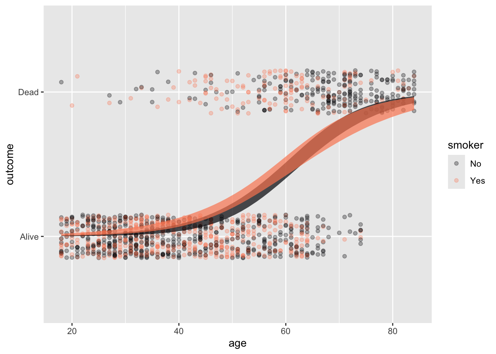
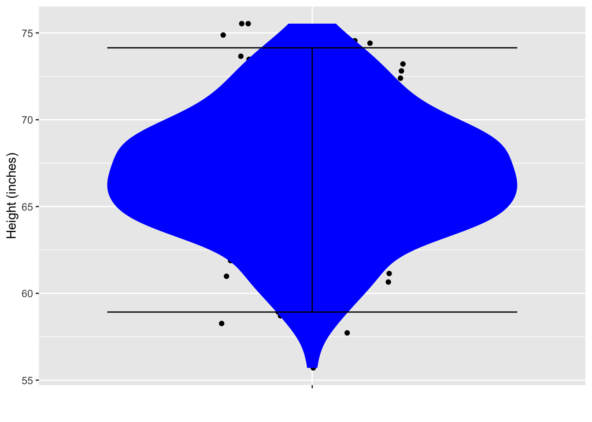
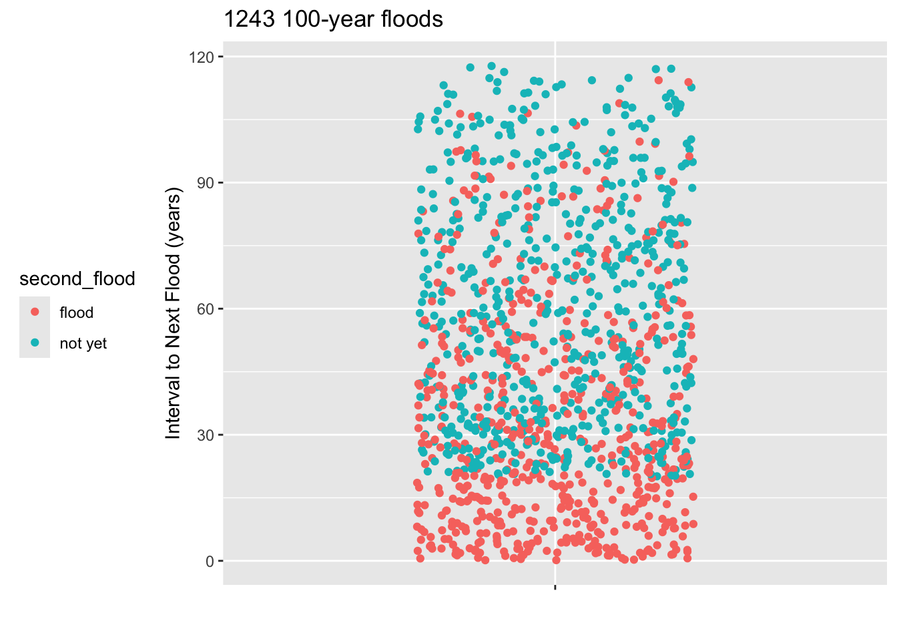
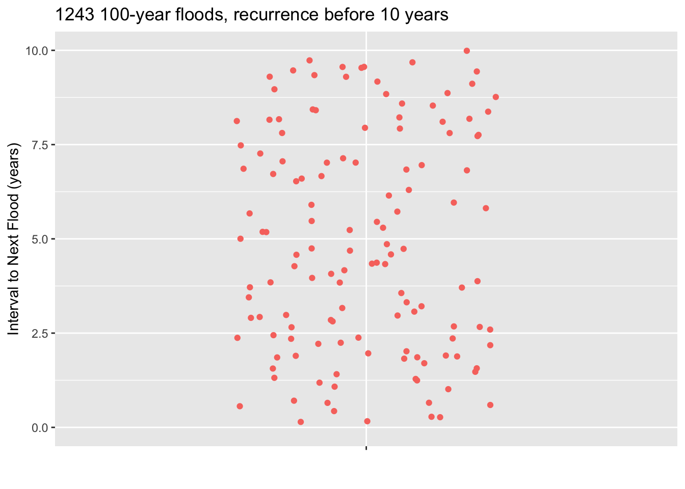

BFat_mod <- Anthro_F |> model_train(BFat ~ Weight + Height + Waist)18 Predictions
Everyday life is awash in predictions. Weather forecasts state the chances of rain, usually as a percentage: 0%, 10%, 20%, …, 90%, 100%. We bring in a car for repairs and are given an estimate for the eventual bill. Doctors often give patients a prognosis which can come in a form like “you should be feeling better in a few days” or, for severe illnesses such as cancer, a 5-year survival rate. Economists offer their informed guesses about the direction that the economy is heading: unemployment will go down, interest rates up. In horse racing, the betting odds signal a hunch about the eventual outcome of a race.
In every case, a prediction refers to an “event” from which multiple outcomes are possible. Your team may win or lose in next Sunday’s game. It might rain or not next Tuesday. The events in these simple examples are your team’s performance in the specific game to be played on the upcoming Sunday or the precipitation next Tuesday. Events can also refer to extended periods of time, for instance the forecast for the number of hurricanes next year.
Statistical predictions
A “statistical prediction” has a special form not usually present in everyday, casual predictions. A statistical prediction assigns a number to every possible outcome of an event. The number is a relative probability. For example, a casual prediction of the outcome of next Sunday’s game might be “We will win.” A statistical prediction assigns a number to each possible outcome, for instance: win 5, lose 4 which signals that winning is only slightly more probable than losing.
When there are just two possible outcomes, people often prefer to state the probability of one outcome, leaving the probability of the other outcome implicit. A prediction of win 5, lose 4 translates to a 5/9 probability of winning, that is, 55.6%. The implicit probability of the other outcome, losing, is 1 - 55.6% or 44.4%.
Admittedly, saying, “The probability of winning is 55.6%,” is pretty much equivalent to saying, “The game could go either way.” Indeed, what could justify the implied precision of the number 55.6% is not apparent when, in fact, the outcome is utterly unknown.
The numerical component of a statistical prediction serves three distinct tasks. One task is to convey uncertainty. For a single event’s outcome (e.g., the game next Sunday), the seeming precision of 55.6% is unnecessary. The uncertainty in the outcome could be conveyed just as well by a prediction of, say, 40% or 60%.
A second task is to signal when we are saying something of substance. Suppose your team hardly ever wins. A prediction of 50% for win is an strong indication that the predictor believes that something unusual is going on. Perhaps all the usual players on the other team have been disabled by flu and they will field a team of novices. Signaling “something of substance” relies on comparing a prior belief (“your team hardly ever wins”) with the prediction itself. This comparison is easiest when both the prediction and the prior belief are represented as numbers.
Yet a third task has to do with situations where the event is repeated over and over again. For instance, the probability of the house (casino) winning in a single spin of roulette (with 0 and 00) is 55%. For a single play, this probability provides entertainment value. Anything might happen; the outcome is entirely uncertain. But for an evening’s worth of repeated spins, the 55% probability is a guarantee that that the house will come out ahead at the end of the night.
For a categorical outcome, it’s easy to see how one can assign a relative probability to each possible outcome. On the other hand, for a numerical outcome, there is a theoretical infinity of possibilities. But we can’t write down an infinite set of numbers!
The way we dealt with numerical outcomes in Lesson 15 was to specify a noise model along with specific numerical parameters. And that is the common practice when making predictions of numerical outcomes. An example: Rather than predicting the win/lose outcomes of a game, we might prefer to predict the “point spread,” the numerical difference in the teams scores. The form of a prediction could be: “My statistical prediction of the point spread is a normal probability model with a mean of 3 points and a standard deviation of 5 points.”
As a shorthand for stating a probability model and values for parameters, it’s common to state statistical predictions of numerical outcomes as a “prediction interval,” two numbers that define a range of outcomes. The two numbers come from a routine calculation using probability models. Routinely, the two numbers constitute a 95% prediction interval, meaning that a random number from the noise model will fall in the interval 95% of the time.
Intervals from a noise model
Consider a prediction of a numerical outcome taking the form of a normal noise model with these parameters: mean 10 and standard deviation 4. Such a prediction is saying that any outcome such as generated by rnorm(n, mean=10, sd=4) is equally likely. Figure 18.1 shows a set of possible outcomes. The prediction is that any of the dots in panel (a) is equally likely.


rnorm(n, mean=10, sd=4)
The upper and lower ends of the prediction interval are not hard boundaries; outcomes outside the interval are possible. But such outcomes are uncommon, happening in only about one in twenty events.
Prediction via statistical modeling
The basis for a statistical prediction is training data: a data frame whose unit of observation is an event and whose variables include the event’s outcome and whatever explanatory variables are to be used to form the prediction. It is up to the modeler to decide what training events are relevant to include in the training data, but all of them must have available values for the outcome.
There are, of course, other forms of prediction. A mechanistic prediction is based on “laws” or models of how a system works. Often, mechanistic predictions use a small set of data called “initial conditions” and then propagate these initial conditions through the laws or models. An example is a prediction of the location of a satellite, which draws on the principles of physics.
Much of the process of forming a statistical prediction is familiar from earlier Lessons. There is a training phase to prediction in which the training data are collected and a model specification is proposed.
The response variable in the model specification will be the variable recording the outcome of the training events. As for the explanatory variables, the modeler is free to choose any that she thinks will be informative about the outcome. The direction of causality is not essential when creating a prediction model. Indeed, some of the best prediction models can be made when the explanatory variables are a consequence of the response variable to be predicted. The training phase is completed by training the model on the training events—we will call it the “prediction model”— and storing the model for later use. As usual, the prediction model includes the formula by which the model output is calculated, but more is needed. In particular, the model includes information about the residuals identified in the fitting process. For instance, the prediction model might store the variance of the residuals.
The application phase for a prediction involves collecting “event data” about the particular event whose outcome will be predicted. Naturally, these event data give values for the explanatory variables in the prediction model. However, the value of the response variable is unknown. (If it were known, there would be no need for prediction!) The prediction model is evaluated to give a model output. The full prediction is formed by combining the model output with the information about residuals stored in the prediction model.
To illustrate, we will use the Anthro_F data frame that records, for 184 individuals, various body measurements such as wrist circumference, height, weight, and so on. Almost all the measurements were made with readily available instruments: a weight scale, a ruler, and a flexible sort of ruler called a measuring tape. But one of the measurements is more complex: BFat is the amount of body fat in proportion to the overall weight. It is calculated from the density of the body. Density is body volume divided by weight; measuring volume involves a water immersion process, depicted in Figure 18.2.
It is unclear what genuine medical or athletic-training value the body-fat measurement might have, but some people fix on it to describe overall “fitness.” The difficulty of the direct measurement (Figure 18.2) motivates a search for more convenient methods. We will look at calculating body fat percentage using a formula based on easy-to-make measurements such as weight and waist circumference.
This is a prediction problem because the body fat percentage is unknown and we want to say something about what it would likely be if we undertook the difficult direct measurement. It might be more natural to call this a translation problem; we translate the easy-to-make measurements into a difficult-to-make measurement. Indeed, prediction models are a common component of artificial intelligence systems to recognize human speech, translate from one language to another, or even the ever-popular identification of cat photos on the internet.
To build the prediction model, we need to provide a model specification. There are many possibilities: any specification with BFat as the response variable. Data scientists who build prediction models often put considerable effort into identifying suitable model specifications, a process called “feature engineering.” For simplicity, we will work with BFat ~ Weight + Height + Waist. Then, we fit the model and store it for later use:
Now, the application phase. A person enters the fitness center eager to know his body fat percentage. Lacking the apparatus for direct measurement, we measure the explanatory variables for the prediction model:
- Subject: John Q.
- Waist: 67 cm
- Weight: 60 kg
- Height: 1.70 m
To make the prediction, evaluate the prediction model on these values:
BFat_mod |> model_eval(Waist=67, Weight=60, Height=1.70)| Waist | Weight | Height | .lwr | .output | .upr |
|---|---|---|---|---|---|
| 67 | 60 | 1.7 | 12.92686 | 20.14995 | 27.37304 |
A statistically naive conclusion is that John Q’s body fat percentage is 20. Since the BFat variable in Anthro_F is recorded in percent, the prediction will have those same units. So John Q. is told that his body fat is 20%.
The statistical thinker understands that a prediction of a numerical outcome such as body fat percentage ought to take the form of a noise model, e.g. a normal noise model with mean 20% and standard deviation 3.5%. The model_eval() function is arranged to present the noise model as a prediction interval so that the prediction would be stated as 13% to 27%. These are the numbers reported in the .lwr and .upr columns of the report generated by model_eval().
How good is the prediction?
Figure 18.3 shows the training data values for BFat. These are authentic values, but it is correct as well to think of them as equally-likely predictions from a no-input prediction model, BFat ~ 1. The story behind such a no-input prediction might be told like this: “Somebody just came into the fitness center, but I know nothing about them. What is their body mass?” A common sense answer would be, “I have no idea.” But the statistical thinker can fall back on the patterns in the training data.
The red I shows the no-input prediction translated into a 95% prediction interval.
Anthro_F |> point_plot(BFat ~ 1) |>
gf_errorbar(13 + 27 ~ 0.8, color="blue", width=0.1) |>
gf_errorbar(33 + 10.5 ~ 1.2, color = "red", width = 0.1)
BFat. The red I marks the prediction interval for the model BFat ~ 1, which does not make use of any measurements as input.
The blue I shows the 95% prediction interval for the model BFat ~ Weight + Height + Waist. The blue I is clearly shorter than the red I; the input variables provide some information about BFat.
Whether the prediction is helpful for Joe Q depends on context. For instance, whether Joe Q or his trainer would take different action based on the blue I than he would for the red I interval. For example, would Joe Q., as a fitness freak, say that the prediction indicates that he has his body fat at such a good value that he should start to focus on other matters of importance, such as strength or endurance.
Such decision-related factors are the ultimate test of the utility of a prediction model. Despite this, some modelers like to have a way to measure a prediction’s quality without drawing on context. A sensible choice is the ratio of the length of the prediction interval compared to the length of the no-input prediction interval. For example, the blue interval in Figure 18.3 is about 60% of the length of the red, no-input interval. Actually, this ratio is closely related to the prediction model’s R2, the ratio being \(\sqrt{1 - R^2}\).
Another critical factor in evaluating a prediction is whether the training data are relevant to the case (that is, Joe Q.) for which the prediction is being made. That the training data were collected from females suggests that there is some sampling bias in the prediction interval for Joe Q. Better to use directly relevant data. For Joe Q.’s interests, perhaps much better data would be from males and include measurement of their fitness-freakiness.
In everyday life, such “predictions” are often presented as “measurements.” Ideally, all measurements should come with an interval. This is common in scientific reports, which often include “error bars,” but not in everyday life. For instance, few people would give a second thought about Joe Q.’s height measurement: 1.70 meters. But height measurements depend on the time of day and the skill/methodology of the person doing the measurement. More likely, the Joe Q measurement should be \(1.70 \pm 0.02\) meters. Unfortunately, even in technical areas such as medicine or economics, measurements typically are not reported as intervals. Keep this in mind next time you read about a measurement of inflation, unemployment, GDP, blood pressure, or anything else.
Consider the consequences of a measurement reported without a prediction interval. Joe Q might be told that his body fat has been measured at 20% (without any prediction interval). Looking at the internet, Joe might find his 20% being characterized as “acceptable.” Since Joe wants to be more than “acceptable,” he would ask the fitness center for advice, which could come in the form of a recommendation to hire a personal trainer. Had the prediction interval been reported, Joe might destain to take any specific action based on the measurement and might (helpfully) call into question whether body fat has any useful information to convey beyond what’s provided by the easy-to-measure quantities such as weight and height.
A no-input prediction model is sometimes called a “Null model,” the “null” indicating the lack of input information. We will return to “null” in Lesson 29.I am not endorsing such internet statements. Experience suggests they should be treated with extreme or total skepticism.
The prediction interval
Calculation of the prediction interval involves three components:
- The model output as calculated by applying the model function to the prediction inputs. This is reported, for example, in the
.outputcolumn frommodel_eval(). The model output tells where to center the prediction interval. - The size of the residuals from the model fitting process. This is usually the major component of the length of the prediction interval. For instance, if the variance of the residuals is 25, the length of the prediction interval will be roughly \(4 \times \sqrt{25}\).
- The length of the confidence interval for example as reported in the model annotation to
point_plot(). This usually plays only a minor part in the prediction interval.
The .lwr and .upr bounds reported by model_eval() take all three factors into account.
Be careful not to confuse a confidence interval with a prediction interval. The prediction interval is always longer, usually much longer. To illustrate graphically, Figure 18.4 shows the confidence and prediction intervals for the model BFat ~ Waist + Height. (We are using this simpler model to avoid overcrowding the graph. In practice, it’s usually easy to read the prediction interval for a given case from the model_eval() report.)
Pred_model <- Anthro_F |> model_train(BFat ~ Waist + Height)
Pred_model |> model_plot(interval = "confidence", model_ink = 0.3)
Pred_model |> model_plot(interval = "prediction", model_ink = 0.3)

BFat ~ Waist + Height
:::
Unfortunately, many statistics texts use the phrase “predicted value” to refer to what is properly called the “model value.” Any predicted value in a statistics text ought to include a prediction interval. Since texts often report only confidence intervals, it’s understandable that students confuse the confidence interval with the prediction interval. This is entirely misleading. The confidence interval gives a grossly rosey view of prediction; the much larger prediction interval gives a realistic view.
Form of a statistical prediction: Categorical outcome
As stated previously, the proper form for a statistical prediction is assigning a relative probability to each possible outcome. For quantitative response variables, such assignment is described by a noise model, but usually, a shorthand in the form of a “prediction interval” is used to summarize the noise model.
When the response variable is categorical, a statistical prediction takes the form of a list of relative probabilities, one for each level of the response variable. What’s potentially confusing here is that there is no “prediction interval” when presenting a prediction of a categorical variable, just the single number assigned to each level of the response variable.
In these Lessons, we treat only one kind of categorical response variable: one with two levels, which can therefore be converted to a zero-one variable. This enables us to use regression models in much the same way as for quantitative response variables. We typically use different regression methods for a quantitative response than a zero-one response. Quantitative response variables usually call for a linear regression method, while logistic regression is used for a zero-one response variable.
Although these Lessons emphasize zero-one response variables, building models of multi-level categorical response variables is also possible. We won’t go into detail here, but such models are called “classifiers” rather than regression models. A classifier output is already in the proper format for prediction: assignment of a relative probability to each possible level of the response.
Returning to zero-one response variables, we will illustrate the prediction process using a classic setting for zero-one variables: mortality.
The Whickham data frame comes from a one-in-six survey, conducted in 1972-1974, of female registered voters in a mixed urban and rural district near Newcastle upon Tyne, US. Two observables, age and smoking status, were recorded. The outcome of interest was whether each participant would die within the next 20 years. Needless to say, all the participants were alive at the time of the survey.
Whickham training data.
| age | smoker | outcome |
|---|---|---|
| 37 | No | Alive |
| 23 | No | Alive |
| 56 | Yes | Alive |
| 75 | Yes | Dead |
| 67 | No | Dead |
With the age and smoker observables alone, building a meaningful prediction model of 20-year mortality is impossible. There is a vast sampling bias since all the survey participants were alive during data collection. To assemble training data, it was necessary to wait 20 years to see which participants remained alive. This outcome was recorded in a follow-up survey in the 1990s. Whickham is the resultant training data.
With the training data in hand, we can build a prediction model. Naturally, the outcome is the response variable. Based on her insight or intuition, the modeler can choose which explanatory variables to use and how to combine them. For the sake of the example, we’ll use both predictor variables and their interaction.
Whickham |>
point_plot(outcome ~ age * smoker, annot = "model",
point_ink=0.3, model_ink=0.7)

Whickham training data and the prediction model constructed from it.
Figure 18.5 shows the Whickham data and the mortality ~ age * smoker prediction model constructed from it. The model is shown, as usual, with confidence bands. But that is not the appropriate form for the prediction.
To get the prediction, we simply train the model …
pred_model <- Whickham |>
mutate(mortality = zero_one(outcome, one="Dead")) |>
model_train(mortality ~ age * smoker)… and apply the model to the predictor values relevant to the case at hand. Here, for illustration, we’ll predict the 20-year survival for a 50-year-old smoker. (Since all the Whickham data is about females, the prediction is effectively for a 50-year-old female.)
pred_model |> model_eval(age = 50, smoker = "Yes", interval = "none")| age | smoker | .output |
|---|---|---|
| 50 | Yes | 0.24 |
The output of model_eval() is a data frame that repeats the values we gave for the predictor variables age and smoker and gives a model output (.output) as well. Since Whickham’s mortality variable is a two-level categorical variable, logistic regression was used to fit the model and the model output will always be between 0 and 1. We interpret the model output as the probability that the person described by the predictor values will die in the next 20 years: 24%.
The ideal form of a prediction for a categorical outcome lists every level of that variable and assigns a probability to each. In this case, since there are only two levels of the outcome, the probability of the second is simply one minus the probability of the first: \(0.76 = 1 - 0.24\).
| outcome | probability |
|---|---|
| Dead | 24% |
| Alive | 76% |
In practice, most writers would give the probability of survival (76%) and leave it for the reader to infer the corresponding probability of mortality (24%).
The model value from a logistic model is the prediction.
When the response variable is a two-level categorical variable, which can be converted without loss to a zero-one variable, our preferred regression technique is called “logistic regression.” This will be discussed in Lesson 21 but you have already seen logistic regression graphically: the S-shaped curve running from zero to one.
The model value from logistic regression for any given set of inputs is a number in the range zero to one. Since the model value is a number, you might anticipate the need for a prediction interval around this number, just as for non-zero-one numerical variables. However, such an interval is not needed. The model value from logistic regression is itself in the proper form for a prediction. The model output is the probability assigned to the level of the response variable represented by the number 1. Since there are only two levels for a zero-one variable, the probability assigned to level 0 will be the complement of the probability assigned to level 1.
Example: Differential diagnosis
A patient comes to an urgent-care clinic with symptoms. The healthcare professional tries to diagnose what disease or illness the patient has. A diagnosis is a prediction. The inputs to the prediction are the symptoms—neck stiffness, a tremor, and so on—as well as facts about the person, such as age, sex, occupation, and family history. The prediction output is a set of probabilities, one for each medical condition that could cause the symptoms.
Doctors are trained to perform a differential diagnosis, where the current set of probabilities informs the choices of additional tests and treatments. The probabilities are updated based on the information gained from the tests and treatments. This update may suggest new tests or treatments, the results of which may drive a new update. The popular television drama House provides an example of the evolving predictions of differential diagnosis in every episode.
Exercises
Exercise 19.1 shark-beat-table
TITLE GOES HERE: You’ve been told that Jenny is in an elementary school that covers grade K through 6. Predict how old is Jenny.
- Put your prediction in the format of assigning a probability to each of the possible outcomes, as listes below. Remember that the sum of your probabilities should be 1. (You don’t have to give too much thought to the details. Anything reasonable will do.)
Age | 3 or under | 4 | 5 | 6 | 7 | 8 | 9 | 10 | 11 | 12 | 13 | 14 | 15+
------------|------------|---|---|---|---|---|---|----|----|-----|----|----|-----
probability | | | | | | | | | | | | |Answer:
Perhaps something like the following, where the probabilities are given in percentage points.
Age | 3 or under | 4 | 5 | 6 | 7 | 8 | 9 | 10 | 11 | 12 | 13 | 14 | 15+
------------|-------------|-----|-----|-----|-----|-----|-----|-----|-----|-----|-----|-----|------
probability | 0 | 2.5 | 12 | 12 | 12 | 12 | 12 | 12 | 12 | 11 | 2 | 0.5 | 0Ages 5 through 12 are equally likely, with a small possibility of 4-year olds or 14 year olds.
- Translate your set of probabilities to a 95% prediction interval.
Answer:
The 95% prediction interval 5 to 12 years old.
A 95% interval should leave out 2.5% of the total probability on either end. Below age 5 there is 2.5% and above age 12 there is 2.5%.
If you wrote your own probabilities so that there’s no cut-off that gives exactly 2.5%, then set the interval to come as close as possible to 2.5%.
Exercise 19.2 fish-eat-vase
At a very large ballroom dance class, you are to be teamed up with a randomly selected partner. There are 200 potential partners. The figure below shows their heights.
From the data plotted, calculate a 95% prediction interval on the height of your eventual partner. (Hint: You can do this by counting.)
Answer:
59 to 74 inches.
Since there are 200 points, a 95% interval should exclude the top five cases and the bottom five cases. So draw the bottom boundary of the interval just above the bottom five points, and the top boundary just below the top five points.

Exercise 19.3 lobster-spend-cotton
The town where you live has just gone through a so-called 100-year rain storm, which caused flooding of the town’s sewage treatment plant and consequent general ickiness. The city council is holding a meeting to discuss install flood barriers around the sewage treatment plant. The are trying to decide how urgent it is to undertake this expensive project. When will the next 100-year storm occur.
To address the question, the city council has enlisted you, the town’s most famous data scientist, to do some research to find the soonest that a 100-year flood can re-occcur.
You look at the historical weather records for towns that had a 100-year flood at least 20 years ago. The records start in 1900 and you found 1243 towns with a 100-year flood that happened 20 or more years ago. The plot shows, for all the towns that had a 100-year flood at least 20 years ago, how long it was until the next flood occurred. Those town for which no second flood occurred are shown in a different color.
You explain to the city council what a 95% prediction interval is and that you will put your prediction in the form of a probability of 2.5% that the flood will occur sooner than the date you give. You show them how to count dots on a jitter plot to find the 2.5% level.


Since the town council is thinking of making the wall-building investment in the next 10 years, you also have provided a zoomed-in plot showing just the floods where the interval to the next flood was less than ten years.
- You have n = 1243 floods in your database. How many is 2.5% of 1243? Answer: 31
- Using the zoomed-in plot, starting at the bottom count the number of floods you calculated in part (a). A line drawn where the counting stops is the location of the bottom of the 95% coverage interval. Where is the bottom of the 95% interval. Answer: About 2.5 years.
- A council member proposes that the town act soon enough so that there is a 99% chance that the next 100-year flood will not occur before the work is finished. It will take 1 year to finish the work, once it is started. According to your data, when should the town start work? Answer: Find the bottom limit that excludes 1% of the 1243 floods in your data. This will be between the 12th and 13th flood, counting up from the bottom. This will be at about 1.25 years, that is 15 months. So the town has 3 months before work must begin. That answer will be a big surprise to those who think the next 100-year flood won’t come for about 100 years.
- A council member has a question. “Judging from the graph on the left, are you saying that the next 100-year flood must come sometime within the next 120 years?” No, that’s not how the graph shold be read. Explain why. Answer: Since the records only start in 1900, the longest possible interval can be 120 years, that is, from about 2020 to 1900. About half of the dots in the plot reflect towns that haven’t yet had a recurrence 100-year flood. Those could happen at any time, and presumably many of them will happen after an interval of, say, 150 years or even longer.
Exercise 19.4 kangaroo-freeze-candy
Calculation of a 95% coverage interval (or any other percent level interval) is straightforward with the right software. To illustrate, consider the efficiency of cars and light trucks in terms of CO_2 emissions per mile driven. We’ll use the CO2city variable in the SDSdata::MPG data frame. The basic calculation using the mosaic package is:
SDSdata::MPG |> df_stats( ~ CO2city, coverage(0.95))| response | lower | upper |
|---|---|---|
| CO2city | 276.475 | 684.525 |
The following figure shows a violin plot of CO2city which has been annotated with various coverage intervals. Use the calculation above to identify which of the intervals corresponds to which coverage level.
- 50% coverage interval Answer: (c)
- 75% coverage interval Answer: (e)
- 90% coverage interval Answer: (g)
- 100% coverage interval Answer: (i). This extends from the min to the max, so you could have figured this out just from the figure.
Exercise 19.5 beech-run-mug
There’s a compile problem with this exercise.
Exercise 19.6 beech-send-plant
TITLE GOES HERE: The graph plots winning time in the Scottish hill races as a function of climb (in meters) and distance (in km). There is a jittered data layer as well as an interval layer showing the 95% prediction interval.

- What is the unit of observation for the data layer. Answer: In the hill racing data, the unit of observation is a winner of a race. In the interval layer, the unit of observation is a stratum of distance and climb.
- How many different strata for race distance are there? Answer: Five. Within each of the five distance strata are a few sub-strata for climb.
- From the legend you can see that there are five strata for climb. Yet not every climb stratum shows up for each distance stratum. State, in everyday terms, why some strata are missing. Answer: The shorter races don’t include any with the largest climbs, while the longer races don’t include any with the shortest climbs.
- Your friend, a competitive hill racer, is planning to run a race with a distance of 13 km and a climb of 1200 m. Make a prediction, in the form of a 95% interval, of how long the race will take for the winner. Answer: The inputs correspond to the stratum of 10-15 km and 1000-1500 m. Looking at the interval for this stratum, you can read off the prediction interval as 4700 to 8500 seconds.
- The Scottish hill racing data includes both male and female winners. Make a simple sketch of what the interval plot would look like if sex were included as an explanatory variable in the interval plot. (You can be casual about the exact lengths and positions of the individual prediction intervals.)
Answer:

Exercise 19.7 giraffe-fall-door
The HELPrct date frame (in the mosaicData package) is about a clinical trial (that is, an experiment) conducted with adult inpatients recruited from a detoxification unit. The response variable of interest reflects the success or failure of the detox treatment, namely, did the patient continue use of the substance abused after the treatment.
Figure 18.6 shows the output of a simple classifier (maybe too simple!) of the response given these inputs: the average number of alcoholic drinks consumed per day in the past 30 day (before treatment); and the patient’s self-perceived level of social support from friends. (The scale for social support is zero to fourteen, with a higher number meaning more support.)
[1] "PROBLEM WITH model_plot() here. Old interface."What’s the probability of treatment failure for a patient who has 25 alcoholic drinks per day? Does the probability depend on the level of social support? Answer: Probability of failure is 75%, and doesn’t depend on the level of social support.
For a patient at 0 to 10 alcoholic drinks per day, what’s the probability of treatment failure? Does the probability depend on the level of social support? Answer: The probability of failure ranges from about 72% for those with no social support to 82% for those with high social support?
You are thinking about a friend who has roughly five alcoholic drinks per day. You are concerned that he will go on to substance abuse. Do the data from the clinical trial give good reason for your concern? Explain why or why not.
Answer:
It’s always a good idea to be concerned for your friend, but the data reported here are not a basis for that concern. These data are from a population consisting of inpatients from a detoxification unit. These are people who have already shown strong substance abuse. The classifier is not generalizable to your friend, unless he is an inpatient from a detox unit.
- Explain what’s potentially misleading about the y-axis scale selected for the plot. Answer: The selected scale doesn’t include zero and so tends to over-emphasize what amount to small differences in the probability of failure.
Exercise 19.8 Q25-2
Having problems knitting this problem: something about select(): unused arguments (“.lwr”, “.output”, “.upr”)
SAME WITH THE NEXT SEVERAL EXERCISES
Exercise 19.9 Q25-3
Exercise 19.10 Q25-4
Exercise 19.11 Q25-6
Project 19.12 Q18-101
For each of the three prediction distributions shown, estimate by eye the prediction interval using:
- a prediction level of 80%
- a prediction level of 95%
Project 19.13 Q18-102
Compare confidence and prediction intervals using model_eval().
Project 19.14 Q18-103
ABOUT HOW TO MAKE A PREDICTION GIVEN R2. Go back to the GPA example and use the correlation between SAT and GPA.
Project 19.15 Q18-104
Compare various prediction levels, highlighting 80%, 90%, and 95% and comparing to 99.9%.
Project 19.16 Q18-105
By-hand calculation of the prediction interval. Variance of residuals plus length of confidence interval or band converted to a variance. Take the square root of this and write the prediction interval as the output from the model function plus-or-minus twice the square-root of the sum of the variance.
Short projects
Project 19.17 Q25-5
Project 19.18 Q26-1
Project 19.19 Q26-2
Project 19.20 Q18-301
Most readers will be familiar with the system of applications and competitive standardized testing for a place in university. There are two types of justification for such a system:
- It allows students to document their paths so that a university can reward the student for good outcomes in high school.
- It provides universities a way to anticipate how well positioned the student is to benefit from and contribute to the educational environment at the university.
The first of these—reward for past achievement—is utterly different in focus from the second, which is about predicting student performance in the future. I suspect that many people believe that good high-school and standardized-test outcomes are predictive of university success. Let’s explore whether this attitude is justified.
Such an exploration will be difficult because competitive colleges and universities are not at all open about their admissions policies. Not only do they hold such information secret, but they rarely even evaluate their admissions policies in terms of the eventual outcome of students. But some information is available from the companies that provide standardized testing. For instance, the College Board, a US company, has published the results from large-scale studies of high-school GPA and test score data as predictors of university GPA. They have found a relationship between those predictors and first-year university GPA that corresponds to an R2 of about 0.15-0.20. The R2 for second- and later-year grades is statistically indistinguishable from 0: no relationship at all.
As our example of predicting a quantitative outcome variable, we can turn to data collected as part of a study of whether personality traits at the time of application to university can predict student outcomes at university. (More information and background for this example is available at this blog post. The example is intended only to demonstrate the mechanics of creation and interpretation of a prediction, and not as an endorsement or criticism of the ideas behind the research or the research findings.)
The training data are available in the LSTbook::McCredie_Kurtz data frame. The unit of observation is a college student. The GPA variable records the student’s 4-year grade-point average. As a predictor, we will use only one of the many available: m_cons, the student’s mother’s rating on the “Conscienciousness” scale of the Big Five personality traits at the time of the student’s application to college.
With the training data in hand, we move on to Phase 2 of the prediction process: constructing a prediction model. With only one predictor variable, this is automatic:
To help us to understand this model and how it relates to the data, Figure 18.7 displays an annotated point plot.
[1] "THIS CHUNK DOESN'T RUN WHEN IN quarto mode"GPA versus m_cons from the LSTbook::McCredie_Kurtz data frame annotated with a confidence band for the model specification GPA ~ m_cons.
Take careful note that, as always, the band in the annotated point plot is a confidence band.
The ideal form for a prediction assigns a probability indicator to each and every value of the outcome variable, here GPA. To illustrate this form, Figure 18.8 displays two predictions, one for a student whose m_cons rating is low (20) and another for a high rating (45). The reader may anticipate that the prediction for the high m_cons rating will favor high values of the GPA compared to the prediction for the low m_cons rating.
[1] "THIS CHUNK DOESN'T RUN in quarto mode."GPA for two different students, one with a low m_cons rating of 20, the other with a high m_cons rating of 45.
Focus first on the left-most violin in Figure 18.8(a), which shows the GPA prediction for a (hypothetical) student who has an m_cons score of 20. The prediction is a probability distribution. In everyday words, the prediction is that a GPA outcome between, say, 3.0 and 3.5 is most likely. A GPA outcome between, say, 2.6 and 3.0 is less likely, but possible. The same is true for a GPA outcome between 3.5 and 3.9. Outcomes greater than 3.9 or less than 2.6 are possible, but would be rare. Unfortunately, this verbal description imposes borders (e.g. “less than 3.5”) that are not really there; the probability distribution falls smoothly away from its highest point.
Another way to think about the meaning of the probability distribution is supported by panel (b) of Figure 18.8, which simulates 500 GPA values from the distribution. Each of the 500 simulated outcomes is equally likely according to the prediction. As you can see, outcomes near a GPA of 3.25 are more common that outcomes toward the tail of the prediction’s probability distribution.
The shape of the prediction probability distribution (see Chapter 15) corresponds to the “normal” probability model. This will not be true of prediction distributions in all settings, but it is commonly the case. Recall that each normal distribution is described by two parameters: the mean and the standard deviation. In prediction, an alternative but entirely equivalent parameterization specifies the lower and upper bounds of a “prediction interval.”
The model_eval() function calculates the prediction interval for given values of the predictor variables. To use model_eval(), pipe the prediction model in to model_eval() and set the predictor variable values as an argument. For instance,
The prediction interval for m_cons = 20 is reported as 2.88 to 3.67 for a “level” of 90%. This indicates that, according to the prediction model, the outcome has an 90% chance of falling between 2.88 and 3.67. There is a one-in-twenty chance that the outcome will be below 2.88 and, similarly, a one-in-twenty chance that the outcome will be above 3.67.
Is the prediction provided by m_cons strong or weak? This is an important question whenever prediction will have an impact on individuals, as is the case with college admissions. The effect-size methods in Chapter 22 provide one approach to addressing this question. I like posing the issue of strength of prediction in this way:
Consider two extremes of the predictor variable, one high and one low. According to the prediction model, what is the probability that an outcome from the low extreme will in fact turn out to be better than an outcome from the high extreme?
As an analogy, consider the best and the worst team in a sports league according to some rating scale. Despite the differences between the teams, there’s still a chance that the worst team will win when the teams compete. (If not, the teams shouldn’t be in the same league!) How low a probability of the worst team winning would you take as evidence that the worst team should be playing in a different league?
For the m_cons predictor of GPA, the probability is about 1/4. For SAT scores as a predictor of 4-year GPA, the probability is roughly 1/2. The College Board prefers to focus only on first-year GPA, where the probability is about 1/8.
NOTE IN DRAFT: Need to work in this QUOTE FROM the m_cons ARTICLE to set up for the p-value chapter.
“Conscientiousness ratings were significant predictors of GPA.”
Exercises and look at the prediction level in more detail.
::: {.callout-note, collapse=“true”} ## Project 19.21 m_cons-effect-size
What would it take for the prediction of GPA to be useful? At a minimum, the predicted GPA should be “substantially” better for the highest m_cons score applicants than for the lowest m_cons applicants. Figure 18.7 shows that a low m_cons is 20, a high m_cons is 45. And Figure 18.8 shows that the predicted GPA for high m_cons is, on average, about 0.5 grade points higher than for low m_cons. Is 0.5 “substantially” better? The statistical thinker puts the 0.5 in the context of the uncertainty in the prediction itself.
:::
:::
Project 19.22 R2-and-prediction
Enrichment topics
The prediction level
DRAFT. Make this about what decision-makers do with a prediction interval and why 95% may not be an appropriate level.
EMPHASIZE THAT 95% need not at all be the “level” of a prediction interval. (But for a confidence interval, 95% is standard.) All of them are summaries of the same noise model,
is shorthand for a noise model. There is a strong link between interval descriptions of variation and the density display. Suppose you specify the fraction of cases that you want to include in an interval description, say 50% or 80%. In terms of the violin, that fraction is a proportion of the overall area of the violin. For instance, the 50% interval would include the central 50% of the area of the violin, leaving 25% out at the bottom and another 25% out at the top. The 80% interval would leave out only 10% of the area at the top and bottom of the violin. This suggests that the interval style of describing variation really involves three numbers; the top and bottom of the interval as well as the selected percentage (say, 50% or 80%) used to find the location of the top and bottom.
Why not a 99.9% prediction level
DRAFT. Because it’s presumptuous to think that the model is exactly right.